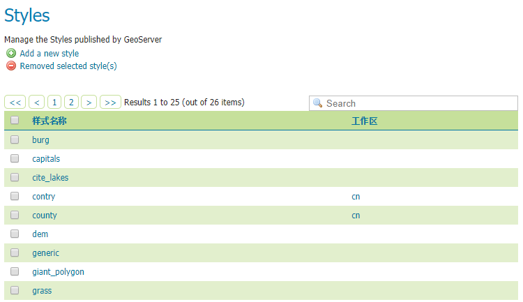
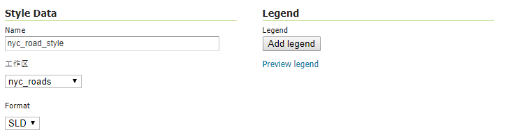
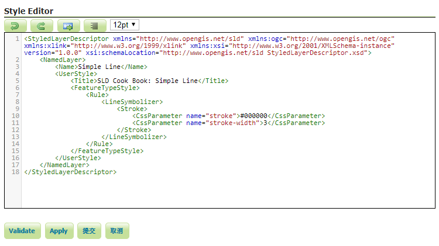
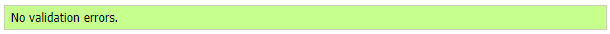
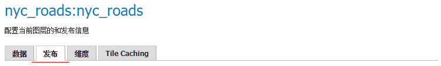
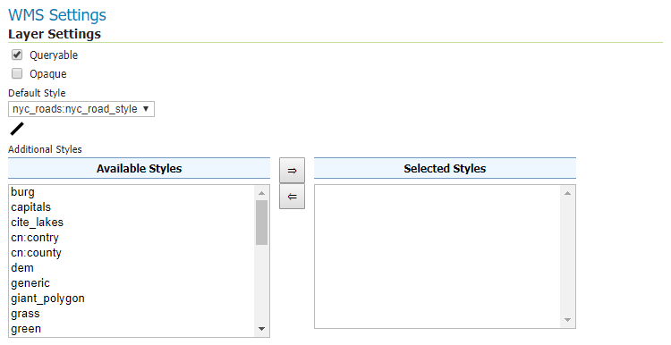
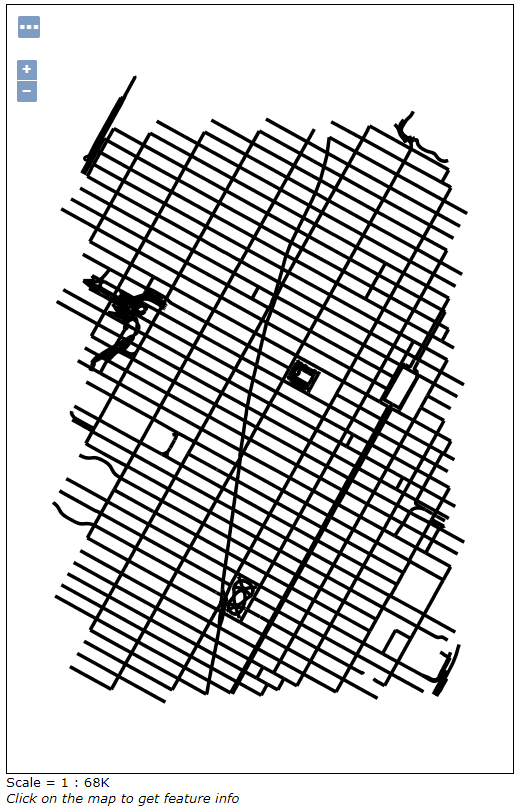

WAI中设置样式
在GeoServer中设置图层样式通常使用SLD(Styled Layer Descriptor)， 在Web管理界面（WAI）中自带SLD编辑器，此文介绍如何在WAI中使用SLD设置图层样式。
Styles 页面
在WAI的Styles页面中，列出了当前所有的样式。

在这里你可以添加样式（Add a new style），移除现有样式（Removed selected style(s)）， 或者点击现有样式进行编辑。
添加一个样式
点击Add a new style进入新建样式页面。
在Name中命名样式为nyc_road_style。
在工作区项选择之前建立的nyc_roads。

然后在编辑器中填写SLD代码，由于这个样式将要用在nyc_roads.shp上，
这个图层都是线要素，所以使用针对线要素样式的SLD。这里我将使用以下代码
<StyledLayerDescriptor xmlns="http://www.opengis.net/sld" xmlns:ogc="http://www.opengis.net/ogc" xmlns:xlink="http://www.w3.org/1999/xlink" xmlns:xsi="http://www.w3.org/2001/XMLSchema-instance" version="1.0.0" xsi:schemaLocation="http://www.opengis.net/sld StyledLayerDescriptor.xsd">
<NamedLayer>
<Name>Simple Line</Name>
<UserStyle>
<Title>SLD Cook Book: Simple Line</Title>
<FeatureTypeStyle>
<Rule>
<LineSymbolizer>
<Stroke>
<CssParameter name="stroke">#000000</CssParameter>
<CssParameter name="stroke-width">3</CssParameter>
</Stroke>
</LineSymbolizer>
</Rule>
</FeatureTypeStyle>
</UserStyle>
</NamedLayer>
</StyledLayerDescriptor>
这段代码只是将线的颜色设置为黑色#000000，线宽设置为3。
在Style Editor中写完以后，可以点击Validate按钮，测试代码是否有误。

如果无误会在页面上方显示No validation errors

否则会显示错误信息。
确认无误以后点击提交，就会保存编辑内容，并新建一个样式，可以在表格中找到。
应用样式到图层
我们将对之前发布的nyc_roads图层应用新的样式。
在图层页面中找到nyc_roads图层，点击进入编辑界面，选择发布选项卡。

在WMS Settings>Layer Settings>Default Style中选择nyc_roads:nyc_road_style，
也就是刚才创建的样式，其中nyc_roads表示样式的工作区，nyc_road_style表示样式名称。

如果你想使用多个样式，可以在下方的Additional Styles中左侧选择想要附加的样式，点击=>按钮添加到右侧。 也可以选中右侧中添加的样式点击<=按钮取消添加。
设置完成后点击页面下方的保存应用设置。然后可以在Layer Preview中预览nyc_roads图层，
发现样式已经应用，线变宽了，颜色也变为黑色。

想要了解更多SLD的用法，可以在官方教程查看。